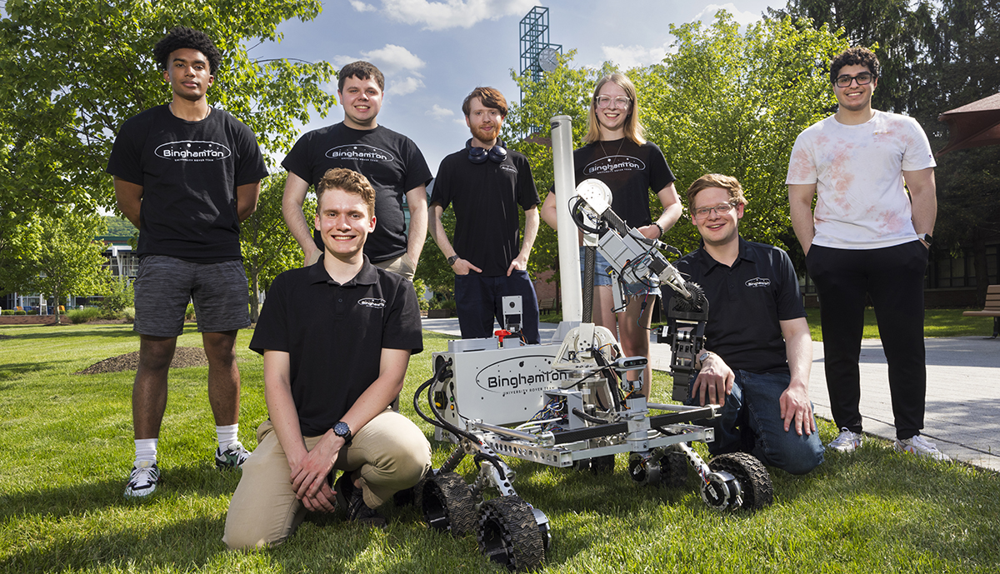
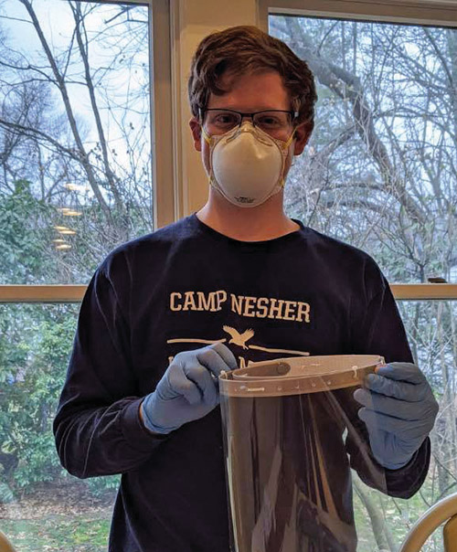
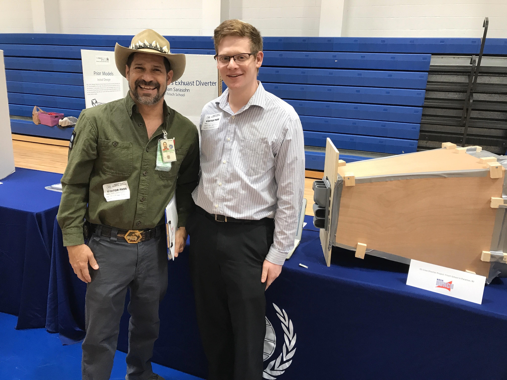

Binghamton University Rover Team Heads to International Competition
Jonathan Sarasohn leads the mechanical design team of the Binghamton University Rover Team, which is headed to the University Rover Challenge in Utah for the second year. The team is one of only 37 worldwide to qualify.
Read more →

Frisch Fab Lab Produces PPE for Frontline Workers
In response to the COVID-19 pandemic, Jonathan Sarasohn and other Frisch alumni organized efforts to produce and distribute over 700 pieces of protective equipment to local healthcare workers using 3D printing and rapid prototyping tools.
Read more →

NASA HUNCH ISS Creq Quarters Diverter Finalists 2020
Jonathan Sarasohn of The Frisch School in New Jersey was selected as a finalist for NASA HUNCH’s 2020 CQ Exhaust Diverter design challenge.
Read more →